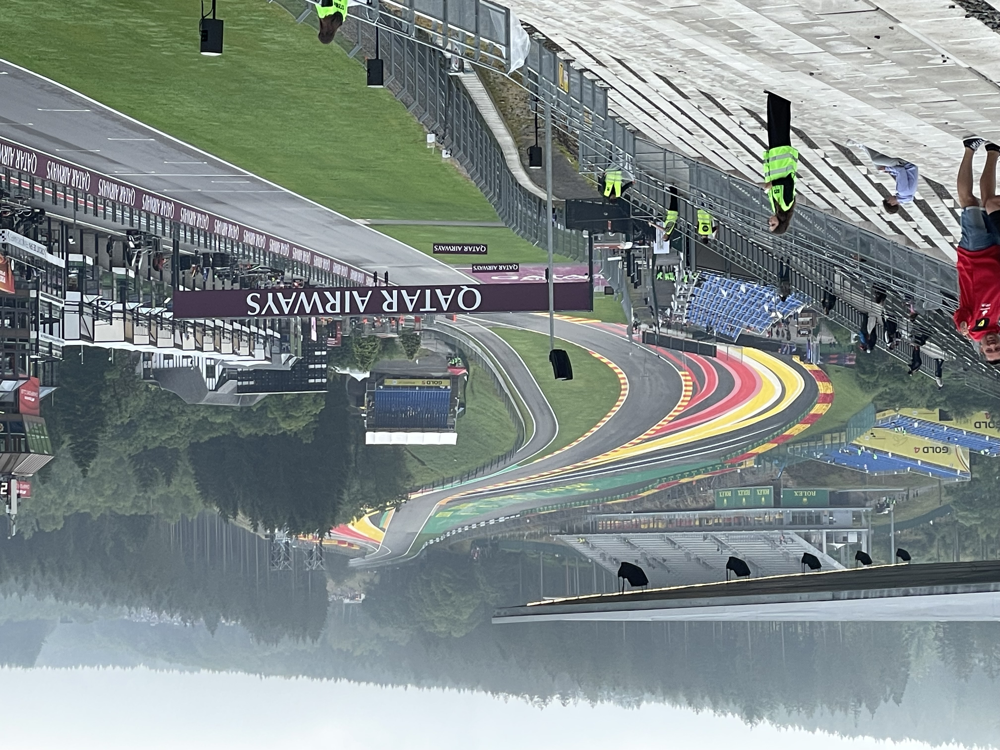

Mijn werkervaring
Hieronder een overzicht van mijn werkervaring
| Periode | Werkervaring |
|---|---|
| Oktober 2021 tot heden | Fitnessinstructeur FysioFitness Bergambacht |
| November 2023 tot heden | Standby Bootcamp Instructor bij Total Bootcamp |
| Juni 2018 tot heden | Bijles Wiskunde A/Natuurkunde TopTutors |
| April 2023 tot april 2024 | WordPress Developer bij DoubleWeb |
| Juli 2022 tot februari 2023 | WordPress Developer bij BURO210 |
| September 2021 tot april 2022 | Stagiair WordPress Developer BURO210 |
| November 2020 tot april 2022 | CMS/Backoffice beheerder en Social Media manager bij Oostendorp Wijnen |
| Februari 2021 tot mei 2021 | Fitness Instructeur bij Anytime Fitness Vianen |
| 2020 tot 2021 | Surveillant op het st. Bonifatius College |
| Mei 2018 tot oktober 2019 | Vakkenvuller/Caissière bij Lidl Nederland |
| December 2018 | Stage bij Zorgpartners Midden-Nederland |
| Oktober 2016 tot februari 2017 | Maatschappelijke stage bij SWOBV |
| Januari 2016 t/m januari 2017 | Folderwijk Spotta |
Mijn opleidingen
Hieronder een overzicht van mijn opleidingen
| Periode | Studie |
|---|---|
| September 2019 - Juli 2021 | MBO Webdeveloper (afgerond met een diploma [ Cum Laude ]) |
| Juni 2019 - Juli 2019 | Fitness Master (afgerond met een diploma) |
| April 2019 - Mei 2019 | Fitnesstrainer 2 (afgerond met een diploma) |
| Februari 2019 - Maart 2019 | Fitnesstrainer 1 (afgerond met een diploma) |
| September 2018 - Januari 2019 | HBO Fysiotherapie |
| 2013 - 2018 | HAVO (afgerond met een diploma) |
Sporten
Naast dat ik werk in de sportschool ben ik ook twee keer per week te vinden in de Gym om lekker te powerliften en mijn hoofd leeg te maken. Daarnaast doe ik ook wekelijks aan Bootcamp.
Auto/motorsport
Mijn wekker zet ik graag vroeg op zaterdag- en zondagochten zodat ik optijd ben voordat de lampen uit gaan. Ja, ik ben een fanatieke F1-fanaat. Naast Formule-1 kijk ik ook graag naar Formule 2, Formule 3, Porche Supercup, MotoGP, Moto3 [GO Colin!!] en IndyCar
Ook ben ik meerdere malen bij de GP van België en Nederland geweest. Voor volgend jaar zijn de Dutch GP tickets al gekocht!
Netflix
'S avonds, in het openbaar vervoer of wanneer ik simpelweg te moe/lui ben om iets serieus te doen, kijk ik graag series op Netflix.
Ik sta altijd open voor suggesties, dus als je laatst wat leuks heb gezien, ben ik benieuwd!
P.S. Sci-Fi, Drama en Crime-series ga ik goed op ;]
Gamen
Oh lord, what a suprise! Deze developer speelt graag games ;]
Mijn favoriete games zijn Call of Duty [voornamelijk verslaafd aan Warzone haha. Always LFG!], Racegames [F1, ACC, iRacing] en Chess.com

Muziek Luisteren
Graag luister ik naar een van mijn playlists uit mijn onderhand uit de hand gelopen Spotify bibliotheek
Feitjes over mij
| Favoriete kleur | #40e0d0 |
| Favoriete Gerecht | Pizza met Ham |
| Is bang voor | Wespen en Bijen |
| Meest "kapot gespeelde" game | Call of Duty: Black Ops 3 |
| Spotify Wrapped 2023 Top 5 Songs |
1. Kordhell - Murder Plot
2. Kungs - All Night Long 3. La Fuente - I Want You 4. Turfy Gang - Padellen 5. LiSA - REALiZE |